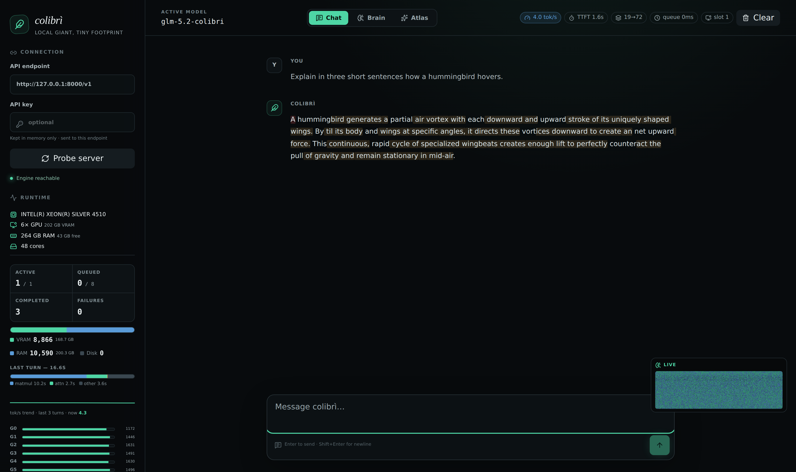
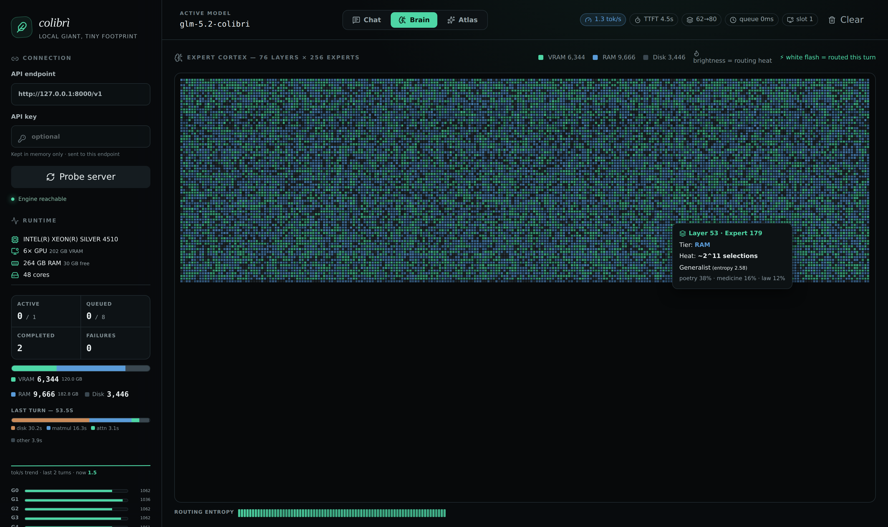
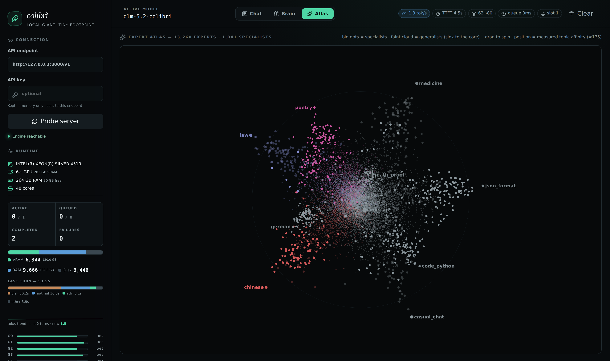

Tiny engine.
Immense model.
Run powerful AI models on your own hardware. Colibrì makes your storage, RAM, and GPU memory work together—so a big model doesn't need a big-budget machine.
No GPU required Pure C engine Open source
Frontier-scale model parameters
One consistent interface
In the pure C engine
Your models. Your machine.
A little engine with a different idea.
THE 30-SECOND VERSIONMost tools ask, “Can the whole model fit in memory?” Colibrì asks, “Which parts do we need right now?” That small change opens up much bigger models.
Memory that works together
Use fast memory for the busy parts, and storage for the rest.
Small by design
A lightweight C engine. No heavyweight runtime. No mandatory GPU.
Measured, not promised
Real hardware. Reproducible results. Correctness before speed claims.
The full README, rewritten in plain English. Technical details and commands included. Read the original ↗
See what's happening under the hood.
$ ./coli web


How it works
A big model does not have to fit in memory
Colibrì is a small program that runs large Mixture-of-Experts (MoE) AI models on your own hardware. An MoE model is a team of specialist networks, called experts. For each token (a small piece of text), a router chooses only the experts it needs.
GLM-5.2 has 744 billion parameters, but uses about 40 billion per token—roughly 5.4% of the total. Only about 11 GB of the active weights change between tokens. Instead of putting everything in expensive memory, Colibrì keeps frequently used parts nearby and reads the rest from storage when needed.
The shared parts
Attention, shared experts, and embeddings—about 17B parameters—stay in RAM. In the int4 format, they take about 9.9 GB.
The specialist parts
19,456 routed experts live on disk: 75 MoE layers × 256, plus the MTP head. At about 19 MB each in int4, they take roughly 370 GB.
Think of it like a desk, a bookshelf, and a library. VRAM (graphics-card memory) is the quickest place to reach. RAM (system memory) is next. NVMe storage holds the full collection. Colibrì moves the right material to the right place rather than requiring a bigger desk.
Five steps for each token
The engine tracks which experts your work uses. A per-layer LRU cache replaces the least recently used experts; a learned hot-store keeps popular ones ready; and optional prefetching loads likely experts one layer early. This is like a just-in-time compiler, but for model weights. The expert atlas shows that routing patterns have useful structure.
The rule: memory placement changes speed, not the model. Running out of fast memory must never silently lower precision or change the router's choices. Learned caching helps repeated work, but can overfit one prompt; prefetching can also slow some machines down. Measure both.
The GLM engine is c/colibri.c plus small shared headers. The C engine needs no BLAS library, no Python at runtime, and no GPU. The optional launcher, converter, and API gateway use Python.
Get started
You need the program (a few hundred KB) and model files (about 372 GB for GLM-5.2). You do not need a GPU. Requirements differ by model—check the model table before downloading. The full quick-start guide covers each platform.
1. Install Colibrì
The easiest option: download a prebuilt release. Choose your Linux, macOS, or Windows archive from GitHub Releases. No compiler is needed. Install Python 3 for the launcher and its helpers.
# Example archive from the README. Use your downloaded filename.
mkdir colibri && tar xzf colibri-v1.8.0-linux-x86_64.tar.gz -C colibri
cd colibri
python3 coli info
The archive contains the C engine (colibri, or colibri.exe on Windows), the coli launcher, and Python helpers. The launcher finds the engine beside it; nothing needs renaming.
Or build it yourself. You need GCC or Clang with OpenMP (support for using multiple CPU threads).
git clone https://github.com/JustVugg/colibri.git
cd colibri/c
./setup.sh
The setup script checks the compiler, builds the engine, and runs self-tests. To make coli available from any directory, run pip install -e . from the repository root. This is an editable installation, not a standalone wheel; keep the checkout, including c/, in place.
In the examples below, run ./coli from the unpacked release folder or the source checkout's c/ folder. Run commands beginning with make -C c or ./c/coli from the repository root. If you installed the launcher on your PATH, use coli instead.
2. Download a model
For GLM-5.2, use the group-scaled int4 (gs64) model with an int8 MTP head. Allow about 372 GB on a drive—preferably a fast NVMe SSD.
Download GLM-5.2 int4-g64 + int8 MTP on Hugging Face ↗
Older per-row int4 mirrors (such as mateogrgic/… and jlnsrk/…) scored about 9 percentage points worse and caused some looping and never-ending answers in issue #455. The gs64 version fixed those specific comparisons, but cannot prevent every repetition or failure to stop.
The MTP head must be int8, not int4. An int4 head can produce almost no accepted draft tokens (#8). Check ls -l <model>/out-mtp-*: the correct int8 file sizes are 3527131672 / 5366238584 / 1065950496 bytes.
You can also download and convert the original FP8 weights one shard (file) at a time. This resumable, one-time Python step does not need all 756 GB of the source on disk at once:
./coli convert --model /nvme/glm52_i4
3. Run it your way
Replace /nvme/glm52_i4 with the path to your model. The launcher detects the RAM budget, cache settings, and MTP support.
# Chat in your terminal
COLI_MODEL=/nvme/glm52_i4 ./coli chat
# See how the model will be split across VRAM, RAM, and disk
COLI_MODEL=/nvme/glm52_i4 ./coli plan
# Check readiness without changing anything
COLI_MODEL=/nvme/glm52_i4 ./coli doctor
COLI_MODEL=/nvme/glm52_i4 ./coli doctor --deep
# Measure and save the fastest safe settings for this machine
COLI_MODEL=/nvme/glm52_i4 ./coli tune
# Start the API and dashboard, and open your browser
./coli web --model /nvme/glm52_i4
# Start the API and dashboard without opening a browser
./coli serve --model /nvme/glm52_i4
The deep check verifies tensors, shards, indexes, and any mirror. On Windows, double-click the release's coli.cmd for quick start, or use the launcher from Command Prompt or PowerShell:
coli.cmd chat --model D:\glm52_i4
# From the c/ folder of a source checkout:
python coli chat --model D:\glm52_i4
Do not start the engine .exe on its own: it has no model selected and will exit. The engine is pure C; the launcher and optional gateway are Python programs.
A terminal session can look like this. This is the README's example, not a promise about startup time on your machine:
$ ./coli chat
🐦 colibri v1.11.0 — GLM-5.2 · 744B MoE · int4 · streaming CPU
✓ ready in 32s · resident 9.9 GB
› ciao!
◆ Ciao! 😊 Come posso aiutarti oggi?
The user says “hello” in Italian, and the model answers, “Hello! How can I help you today?”
4. Switch models, not workflows
coli reads the model's config.json, chooses the right engine, and formats the conversation for that model. Build the engine once, then change only the model path.
# Run these builds from the repository root
make -C c glm
make -C c inkling
make -C c kimi_k3
# Run these from c/ (or use coli from your PATH)
COLI_MODEL=/nvme/glm52_i4 ./coli chat
COLI_MODEL=/nvme/inkling_i4 ./coli chat
COLI_MODEL=/nvme/kimi_k3 ./coli chat
./coli web --model /nvme/inkling_i4
./coli web --model /nvme/kimi_k3
./coli serve --model /nvme/inkling_i4
For non-GLM engines, terminal chat starts a local gateway and connects to it. The terminal, API, and dashboard therefore use the same model-specific chat formatting. You do not need to supply a template.
Supported models
Nine model families, one familiar interface. Every family has its own C engine and uses the same coli chat, coli serve, and coli web commands. “Total” means all model parameters; “active” means the parameters used for one token. B means billion; T means trillion.
Hardware requirements
These are different models, so their requirements are not interchangeable (#191). None requires a GPU. A GPU may speed up a supported backend, but storage speed and cache use still matter.
| Model | Storage for weights | System memory (RAM) | GPU support |
|---|---|---|---|
| OLMoE | ~7 GB, int8 | 8 GB | Not required |
| GLM-5.2 / 5.3 | ~372 GB | 16 GB minimum; 24 GB comfortable | Not required |
| GLM-5.3-Flash | ~195 GB after conversion | 25 GB (12 GB int4 weights + expert cache) | Not required |
| Inkling | ~469 GB | 25 GB with int4 dense weights; ~120 GB without | Not required |
| Kimi K3 | ~1.6 TB | 32 GB or more | Not required |
| DeepSeek V4 Flash | ~167 GB; REAP 150B version ~85 GB | 16 GB minimum; 32 GB comfortable | Optional NVIDIA GTX 10 or newer. Pascal/Turing needs CUDA_ARCH=portable-pre-ampere NO_TC=1; best on RTX 50. Reported prompt processing 5–10× faster, decoding ~2.5× faster. |
| Qwen3.8-Flash-Next | ~185.5 GB, official FP8 checkpoint | 16 GB minimum; 24 GB comfortable at default context | CPU only; GPU not supported |
| Qwen3.6-35B-A3B | ~20 GB, int4-gs64 | 24 GB; the full model must fit in RAM | Optional CUDA expert cache. Two 8 GB GPUs measured 1.44 → 10.05 tok/s with identical output. |
The README does not list a full disk/RAM requirement for DeepSeek V4.1 Flash; see its model guide. The table above preserves the requirements that the README does give.
Model files, builds, and guides
| Family | Total / active parameters | Model files and format | Build from repository root | Guide |
|---|---|---|---|---|
| GLM-5.2 / 5.3 | 744B / 40B | GLM-5.2 int4-g64 + int8 MTP, 372 GB | make -C c glm |
Get started |
| Inkling · Thinking Machines | 975B / 41B | Inkling int4, 469 GB | make -C c inkling |
Inkling |
| GLM-5.3-Flash · Z.ai | 321B / 40B | Official checkpoint. Experts converted to int4-gs64; dense weights stay BF16. Precision is chosen at load time. Includes vision. | make -C c glm53 |
GLM Flash |
| Kimi K3 · Moonshot | 2.8T / 104B | Original checkpoint. Routed experts stay in native MXFP4. | make -C c kimi_k3 |
Kimi K3 |
| DeepSeek V4 Flash | 284B / 13B | Official shards: native fp4 experts and fp8-e4m3 dense weights. The smaller REAP 150B version (85 GB; 132 of 256 experts) uses the same engine, without conversion. | make -C c deepseek-v4 |
DeepSeek V4 |
| DeepSeek V4.1 Flash | 552B / 16B | Official checkpoint, no conversion: fp4 experts, fp8-e4m3 dense weights. Its 203 GB n-gram memory reads a few hundred bytes at a time. Expert reads are 4.5 GB per token vs. GLM-5.2's 12.7 GB. Vision, tool calling, and DSpark drafting are enabled. | make -C c deepseek_v41 |
DeepSeek V4.1 |
| Qwen3.8-Flash-Next · Alibaba | 125B + 51B n-gram / 6B | Original FP8 checkpoint. PLE memory can be paged in as needed; experts stay in native block-FP8. | make -C c qwen38 (CPU only) |
Qwen3.8 |
| Qwen3.6 · Alibaba | 35B / 3B | Recommended int4-gs64 container, ~20 GB. Combines Gated Attention and Gated DeltaNet. | make -C c qwen36 (add CUDA=1 for GPU expert caching) |
Qwen3.6 |
| OLMoE · AI2 | 7B / 1B | Convert with c/tools/convert_olmoe_merged.py. Int8 container, ~7 GB. |
make -C c olmoe |
Converter |
Details worth knowing
Qwen3.6: the recommended int4-gs64 container has about 44% less measured quantization error than per-row int4. Similarity to the int8 reference improves from 0.98777 to 0.99313, and KL divergence (a measure of output difference) drops from 0.109 to 0.080. The per-row int4 container is available for comparison. KAT-Coder v2.5 uses the same engine without changes, as can other checkpoints with the same architecture. With CUDA=1, two 8 GB GPUs improved measured speed from 1.44 to 10.05 tokens/second (7×), with exactly the same output as the CPU path.
Kimi K3: no conversion is needed. It reads the original, quantization-trained MXFP4 experts directly from Hugging Face shards and compresses the BF16 dense weights when loading. The snapshot is about 1.6 TB. For long agent sessions, COLI_K3_CKPT=N stores N recurrent-state checkpoints in RAM; COLI_K3_CKPT_DIR can park them on disk. When a prompt changes, the engine restores the latest usable checkpoint and processes only the remaining text, rather than replaying the whole conversation through its state-space layers. On Vulkan, K3_VK_UP=auto uses measured bandwidth to size expert uploads. CI checks the KDA and MLA attention paths token-for-token against the vendor's implementation.
Inkling: the int4 expert release still has BF16 dense weights (49.4 GB resident). The Inkling guide includes a one-pass tool to shrink the dense set to 15.3 GB, allowing the 975B model to run on a 25 GB machine, with a documented quality trade-off. On a low-RAM host, use that int4 dense container and a small expert cache:
./coli chat --model /nvme/inkling_i4 --cap 2
The default --cap 8 needs roughly 14 GB of cache in addition to resident weights.
Performance
Real machines. Measured results.
The same engine and int4 container can run on a small CPU machine or a multi-GPU system. Hardware changes where the experts live, and how fast they can be read—not the meaning of the model. These are reported measurements, not speed guarantees. Warm caches already contain useful experts; cold caches do not.
Sources: 6× 5090 experiment, 128 GB desktop #200, 5070 Ti #273, and the full benchmark tables. TTFT means time to first token; tok/s means generated tokens per second.
Quality matters too. Smaller weight formats can change accuracy. The quality benchmarks and experiments #108 and #81 measure int4's quality cost, the effect of scale-group sizes, and weight rotations.
Research
More access, less dependence on expensive hardware
Colibrì is both a working inference engine and an open research project. Its goal is to reduce the hardware and cost needed to run large models privately. You can inspect the model's experts, measure the system, and change the code instead of only renting access through an API.
The project tests the entire path: how weights are stored and compressed; where they live; when to move them; how CPU and GPU work together; and how to reduce launch, synchronization, and decoding overhead. An idea is not accepted just because it is conventional—or because one small benchmark looks good. It must improve a real, end-to-end run while preserving measured correctness and quality.
There is no service-level promise about speed. There is a firm default rule against silently changing precision or routing. Less fast memory should mean a slower model, not a secretly different one.
What has been learned
- Treat memory as connected tiers. VRAM, RAM, and storage all hold the same weights; limited fast memory does not prevent inference.
- Load weights just in time. Routing history, LRU caching, pinned popular experts, and one-layer lookahead can reduce reads. History can overfit, and lookahead does not always win.
- Make storage part of the engine. Combine repeated expert reads, overlap I/O with computing, test direct disk access, and spread reads across two SSDs. Drive type matters; dual-drive end-to-end tests are still needed.
- Mix hardware when useful. CPU, CUDA, Metal, NUMA memory, and partial or full expert residency share one runtime. The best mix depends on bandwidth, compute speed, cache residency, and workload.
- Save state without redefining the model. Compressed attention state, warm conversation restarts, faithful sparse attention, and token-by-token validation protect correctness. Memory savings are not automatically throughput gains.
- Make speculative decoding prove itself. Drafting tokens ahead of time can help, but verification may cost more than it saves. Disable it when measurements say so.
Open questions you can help answer
| Question | What we know | What to test next |
|---|---|---|
| Can routing history beat ordinary LRU caching? | Keeping frequently used experts improves repeated tasks, but may overfit one prompt. | Test new prompts across sessions: coding, chat, different languages, and long conversations. |
| Can two SSDs make decoding faster? | Weighted mirror/split routing works and the bandwidth model makes sense. | Compare cold-cache GLM-5.2 runs on one and two drives with independent controllers. |
| Can an automatic planner find the best setup? | RAM/VRAM budgets and several backends are detected already. | Compare its plan with a controlled settings sweep on laptops, workstations, NUMA hosts, and multi-GPU machines. |
| Can better weight formats reduce data movement affordably? | Format and quantization comparisons include quality checks. | Measure quality, bytes moved, latency, and cost per useful token together—not just compression. |
| Can drafting help before most experts are cached? | MTP and grammar drafts work, but MTP also caused a 32% slowdown at about 85% expert-cache hits. | Find the break-even point for acceptance rate, cache hits, batch sharing, and draft depth. |
| Can CPU/GPU overlap hide transfer and synchronization time? | CUDA and Metal can help, but fast CPUs and low cache residency can remove the benefit. | Profile each stage; change one variable at a time on PCIe, unified-memory, and fully resident systems. |
Pick a question and share failures as well as wins. Record the hardware, commit, model and format, exact command, prompt, cache state, throughput, time to first token, expert hit rate, bytes read, and quality check. Change one variable, repeat the run, and attach raw logs. Start with CONTRIBUTING.md, follow the benchmark protocol, and open an experiment issue. A controlled failure teaches more than an unexplained fast result.
What's next
Research is the main product. Work continues on formats, compression, placement, scheduling, storage I/O, CPU/GPU kernels, overlapping computation, attention state, and routing-aware token drafting. The aim is lower hardware requirements and lower cost per useful token, with changes measured, reviewed, and developed openly.
The approach can work with other open MoE models. Nine families run today; MiniMax is among the candidates for future engines. New support needs real end-to-end measurements, not just an announcement.
Advanced techniques
Run across a local cluster
In local cluster mode, a coordinator keeps token generation, routing, and attention state on the main machine. Workers on other Macs read local model files and compute the selected expert feed-forward networks (FFNs). A layer's combined expert request uses one persistent TCP connection, not a separate network round trip for each expert.
Start the optional registration service:
./coli cluster coordinator --host 0.0.0.0 --port 8765
Give each worker the same converted model locally. Replace COORDINATOR and WORKER_IP with your machines' addresses:
./coli cluster worker --model /nvme/glm52_i4 --port 9100 \
--coordinator http://COORDINATOR:8765 --advertise-host WORKER_IP
On the coordinator machine, start inference with worker discovery:
./coli serve --model /nvme/glm52_i4 \
--cluster-coordinator http://127.0.0.1:8765
Alternatively, specify --cluster-workers HOST:PORT,... manually. Cluster transport stays off when no workers are configured, leaving single-machine behavior unchanged. Splitting dense layers and adding browser/WebGPU workers are separate future tasks. Only expose these services on a trusted network.
Use a second SSD
Expert weights are read-only. Put a full or partial second copy on another SSD so the engine can read both drives at once:
COLI_MODEL=/fast/glm52_i4 COLI_MODEL_MIRROR=/second/glm52_i4 ./coli chat
# Optional: declare a 9:3 bandwidth ratio instead of measuring at startup
COLI_DISK_WEIGHTS=9,3 COLI_MODEL=/fast/glm52_i4 \
COLI_MODEL_MIRROR=/second/glm52_i4 ./coli chat
A fixed, bandwidth-weighted hash assigns each expert to one drive. Prefetch and actual reads use the same drive, so the same expert is not cached twice. A 9 GB/s + 3 GB/s pair offers about 33% more theoretical read bandwidth than the faster drive alone; this is not a guaranteed 33% decoding improvement. Parallel pinning and warmup also read both drives.
- At startup, each mirror file's size and safetensors header must match the primary byte-for-byte. Missing or different files are silently read from the primary; partial mirrors are allowed.
- The mirror is never written to during inference.
.coli_usage,.coli_kv, and other sidecar files stay on the primary. - A mirror read failure falls back to the primary and emits one warning rather than crashing the server.
- With identical weights, drive selection does not change tokens. The
MIRROR:statistics show gigabytes read from each drive.
A 25 GB laptop may stream almost everything from disk. On a large machine, CUDA_EXPERT_GB=auto PIN_GB=all can keep all experts resident and remove disk reads from decoding. Between those extremes, .coli_usage records routing every turn so the cache can pin frequently used experts. It can improve repeated workloads, but improvement is not guaranteed for changing tasks. On multi-socket machines, COLI_NUMA=1 spreads resident weights across memory controllers (#82).
For a smaller second drive, run representative prompts first, then use the learned history to choose useful shards. From the repository root:
./c/coli mirror plan --model /fast/glm52_i4 --mirror /second/glm52_i4 \
--budget-gib 200 --reserve-gib 20
./c/coli mirror stage --model /fast/glm52_i4 --mirror /second/glm52_i4 \
--budget-gib 200 --reserve-gib 20
./c/coli mirror verify --model /fast/glm52_i4 --mirror /second/glm52_i4
The planner reads safetensors headers, follows split directories in COLI_MODEL_DIRS, and favors shards containing frequently used experts. Staging leaves the primary untouched, copies through temporary files, keeps the requested free space, checks every copied shard with SHA-256, never deletes existing mirror shards, and publishes its receipt atomically only when the selected mirror is ready.
Read less, and compute while waiting
Each expert's three matrices are stored together and loaded with one pread call. A bounded asynchronous I/O pool (PIPE=1, the default) reads missing experts while cached experts compute. A batch reads each unique expert once. A lookahead thread (PILOT=1) predicts the next layer's experts; measured routing predictability one layer ahead was 71.6%.
On CUDA, COLI_CUDA_PIPE=2 keeps the running intermediate state on the GPU between layers so the CPU expert loop can continue. The experimental Metal backend runs batched expert math on Apple Silicon's unified-memory GPU. The Vulkan backend supports the expert tier, dense projections, and MLA attention on GPUs with a Vulkan 1.2 driver. This includes AMD via Mesa/RADV, older cards such as the RX 580 that vendor stacks no longer support, and RDNA4 cards with results competitive with ROCm in the linked benchmarks.
DIRECT=1 uses O_DIRECT to bypass the operating system's file cache. Reported results include +34% decode with PIPE=1 on a Blackwell/Windows machine, and 4.25 → 9.69 GB/s in iobench on a GB10. Drives with DRAM caches and spare bandwidth often benefit; QLC, DRAM-less, or virtual disks may not. Keep the setting only if it helps your machine.
Keep the model faithful, make its state smaller
The forward pass is checked against a transformers reference implementation. In teacher-forcing tests (feeding the same known tokens to both implementations), typically 30–32 of 32 positions match; two tiny-test positions can differ because near-tied floating-point values depend on the toolchain.
MLA attention stores 576 floats per token instead of 32,768—about 57× less attention memory (the KV cache). It saves this state in .coli_kv, so a conversation can reopen after a restart without processing the old prompt again, with state identical to an uninterrupted session. DSA sparse attention, GLM-5.2's lightning indexer, is implemented faithfully; selecting every key is tested to reproduce dense attention exactly.
Draft tokens, but check the total cost
GLM-5.2's MTP (multi-token prediction) head drafts tokens for the main model to check together. When it helps, this yields 2.2–2.8 tokens per forward pass. Two important defaults protect acceptance:
- Use an int8 MTP head. An int4 head collapses to about 0–4% draft acceptance (#8).
- Drafting and checking must compute the same function.
SPEC_PIN=1keeps both on the same kernel family (#163).
For constrained JSON, grammar-forced drafts (GRAMMAR=file.gbnf) can add accepted tokens at little extra cost. The result still depends on cache warmth. Measure the whole run and use DRAFT=0 if drafting is slower.
DeepSeek V4
Native weights, optional GPU acceleration
DeepSeek V4 Flash runs the official sharded safetensors checkpoint directly—no conversion. Routed experts remain native fp4; dense weights remain fp8-e4m3 with UE8M0 block scales. Its architecture uses MLA plus DSA sparse attention, 43 layers, 256 routed experts and one shared expert, selecting six routed experts at a time.
CPU support covers x86-64 and aarch64 Linux, plus Windows/MSYS2. The optional CUDA tier uses a runtime DLL on Windows and a direct CUDA=1 link on Linux (verified under WSL2). Each stage keeps the CPU's behavior as its reference and can fall back to the CPU.
# From the repository root
cd c
make deepseek-v4
python ./coli chat --model /path/to/DeepSeek-V4-Flash --ram 32
# Also supported: coli run / coli serve / coli web
# Optional Windows CUDA tier
make cuda-dsv4-dll CUDA_ARCH=portable
# On RTX 50, also: make cuda-dsv4-dg-dll
Two experimental GPU options are off by default; leaving them unset preserves output byte-for-byte:
DSV4_HYBRID=1divides expert-cache misses between GPU loading and CPU computation using measured bandwidth.COLI_CUDA_MOE_DOUBLE=1, together withCOLI_CUDA_MOE_BATCH=1, loads the next layer's experts into a second VRAM bank while the current layer computes. It falls back to one bank if VRAM is short.
Pascal and Turing cards (GTX 10 / RTX 20) are supported too: build with CUDA_ARCH=portable-pre-ampere NO_TC=1. The project is looking for community measurements of these options.
Features and measured timings
The engine uses greedy decoding (always choose the highest-scoring next token) and one KV slot. Tool calling works through the HTTP gateway using V4's native prompt and DSML call blocks; grammar constraints are not supported. See the per-engine API matrix.
Prefix checkpoints in RAM and on disk reuse previously processed prompts. On an RTX 5080 with two NVMe drives, a 3,324-token prompt took 90 seconds to process; an 8.3k-token first turn took about four minutes once; later sessions or turns started in 6–9 seconds. Decode speed was about 1.6 tok/s at 3k context. These are specific measurements, not universal timings; details are in the V4 guide.
Give it RAM. The 43 × 256 routed experts take about 137 GiB on disk, and a token touches 301 experts. The cache hit rate drives speed, making --ram the most useful setting. It changes speed, not output.
Why speculative drafting is switched off
DSpark's Markov drafter and full MTP are implemented and checked. They can save passes, but accepted tokens must still be the target model's own highest-scoring choices. In real multi-turn tests, they accepted only 1 in 15 and 10 in 24 drafts. Replaying rejected drafts through recurrent attention cost more than drafting saved: one 14-token answer took 495 seconds.
For that reason, V4_DRAFT and V4_MTP default to 0. The code and results remain available for experiments on faster storage. The DeepSeek V4 guide covers CUDA builds, DLL selection, GPU compatibility, environment settings, performance, checkpoint checks, and an independent tiny-model reference test.
Reference
Go deeper
| topic | doc |
|---|---|
| Benchmarks, community datapoints, quality measurements | docs/benchmarks.md |
| Tuning knobs, policies, the learning cache, prefetch | docs/tuning.md |
| Windows 11 native build (+ CUDA DLL) | docs/windows.md |
| CUDA backend, VRAM expert tier, full residency | docs/cuda.md |
| Vulkan backend (any GPU: AMD via RADV, incl. cards ROCm dropped) | docs/vulkan.md |
| Apple Silicon Metal backend | docs/metal.md |
| OpenAI-compatible API, KV slots, web dashboard | docs/api.md |
| Experimental interface for embedding a segment of model layers (ABI) | docs/segment-runtime.md |
| Experimental Edge interface for tokenization, embeddings, and the output head (ABI) | docs/edge-runtime.md |
| Grammar-forced drafts (structured output) | docs/grammar-draft.md |
| Environment variable inventory | docs/ENVIRONMENT.md |
Repository layout
Makefile root build/check entry point
c/
├── colibri.c GLM-5.2 engine (make glm)
├── inkling.c Inkling engine (make inkling)
├── kimi_k3.c Kimi K3 engine (make kimi_k3)
├── deepseek_v4.c DeepSeek V4 Flash engine (make deepseek-v4)
├── qwen38.c Qwen3.8-Flash-Next text engine (make qwen38)
├── qwen36.c Qwen3.6 engine (make qwen36)
├── olmoe.c OLMoE engine (make olmoe)
│
├── st.h safetensors index and range reads
├── quant.h canonical container decoders
├── tok.h, json.h tokenizer and JSON parser
├── compat.h Windows/macOS shims (POSIX names, one place)
├── expert_store.h streaming expert cache
├── route_trace.h routing telemetry and .coli_usage, engine-agnostic
├── kv_prefix.h KV prefix reuse across turns
│
├── backend_cuda.* optional CUDA tier (CUDA=1)
├── backend_metal.* optional Metal tier (METAL=1)
├── backend_vulkan.* optional Vulkan tier (VULKAN=1)
│
├── Makefile build and local checks
├── coli user-facing CLI
├── openai_server.py OpenAI-compatible HTTP gateway
├── resource_plan.py RAM/VRAM planner behind `coli plan` and `coli doctor`
├── tools/ offline conversion, fixtures and benchmarks
├── scripts/ long-running conversion helpers
└── tests/ dependency-free C and Python tests
web/ browser UI (pure OpenAI-API client)
desktop/ Tauri v2 desktop shell wrapping the web UI
docker/ container images
docs/ reference docs, experiments, media
One C file per model family; shared headers for common work. Each engine owns its architecture. Shared pieces—file reading, weight decoding, tokenizing, and expert caching—live in headers used by multiple engines. This helps a bug fix reach every engine instead of leaving siblings behind.
From the repository root, make, make check, and make clean forward to the engine Makefile.
A small glossary
| Term | In simple English |
|---|---|
| Inference | Running a trained model to generate an answer. |
| Weights / parameters | The stored numbers that define what a model has learned. |
| MoE / routed expert | A model made of specialists; only selected specialists work on each token. |
| Dense weights | Parts of the model used regularly, rather than selected by the expert router. |
| Quantization (int4, int8, FP8) | Storing numbers in smaller formats to reduce memory and storage use, sometimes with a quality cost. |
| Prefill | Processing the prompt before generating a response. |
| Decode | Generating the response one token at a time. |
| Residency / cache hit | Data is already in fast memory, so it does not need a slow disk read. |
| KV state | Saved attention information from earlier tokens. |
| Speculative decoding | Drafting possible next tokens, then asking the main model to verify them. |
| Backend / kernel | The hardware implementation / a small compute routine it runs. |
Community & credits
Help the project grow
Colibrì began as a one-person project on a 12-core laptop with 25 GB of RAM. Its results now come from a community of real machines. If it helps you:
- Star the repository and share it.
- Open an issue with benchmark results from your hardware. Reproducible data is especially useful.
- Join Discord to discuss experiments, hardware, and research.
- Contact the maintainer through GitHub issues to sponsor development or donate hardware.
Why “colibrì”?
“Colibrì” means hummingbird. A hummingbird weighs only a few grams, can hover, and visits many flowers each day. The name reflects the project's starting point: keeping a 744-billion-parameter model running on 25 GB of RAM, twelve CPU cores, and patient disk reads.
Thanks to the open-model community
The engine depends on models released openly. The README thanks Z.ai (GLM), Moonshot AI (Kimi), Alibaba Qwen, MiniMax, and Allen AI (OLMoE), plus everyone who benchmarked, tracked down bugs, repeated an atlas experiment, or contributed a patch.
Research that shaped the project
- REAP and EASY-EP: measure expert importance using outputs and task domains.
- SERE: redirect work to similar experts. ReMoE: tune routing to favor experts already in cache.
- MC-SMoE: use routing patterns to merge and compress experts.
- MoBE and D²-MoE: share common expert weights and store smaller, low-rank differences.
- HybriMoE: schedule experts across CPU and GPU. ScMoE: overlap communication and computation. OD-MoE: load experts on demand across machines.
- vLLM, llama.cpp, and kTransformers: open inference and expert-offloading systems that enable repeatable comparisons.
Engineering foundations
These projects are used or reimplemented in the source tree:
| Project | Its role in Colibrì |
|---|---|
| safetensors | The model file format read by every engine in c/st.h, including fp8 and I64 data types. |
| tiktoken | c/tok.h reproduces its byte_pair_encode: merge the neighboring pair whose combined form has the lowest vocabulary ID. A tiktoken-derived vocabulary needs no separate merge list. |
| llama.cpp | Its GBNF grammar syntax and stack-based parser design inform c/grammar.h; its newBufferWithBytesNoCopy technique informs Metal memory residency. |
| vLLM | A reference for exact output behavior, including where final normalization occurs relative to the language-model head. |
| transformers | The test reference: CI compares a randomly initialized model token-for-token. |
| DietGPU | The GPU ANS compression codec behind the experimental COLI_ANS expert tier. |
| rocWMMA | The HIP backend maps CUDA's nvcuda::wmma fragment/mma_sync API to rocWMMA in c/backend_gpu_compat.h, so one .cu file can compile for both GPU vendors. |
License
Apache 2.0 · Copyright 2026 Vincenzo Fornaro. See LICENSE, NOTICE, and third-party notices. Z.ai releases GLM-5.2 weights under MIT. The engine and model weights have separate licenses.
Read the original documentation in English, 简体中文, 繁體中文, or Italiano. Visit the project website.